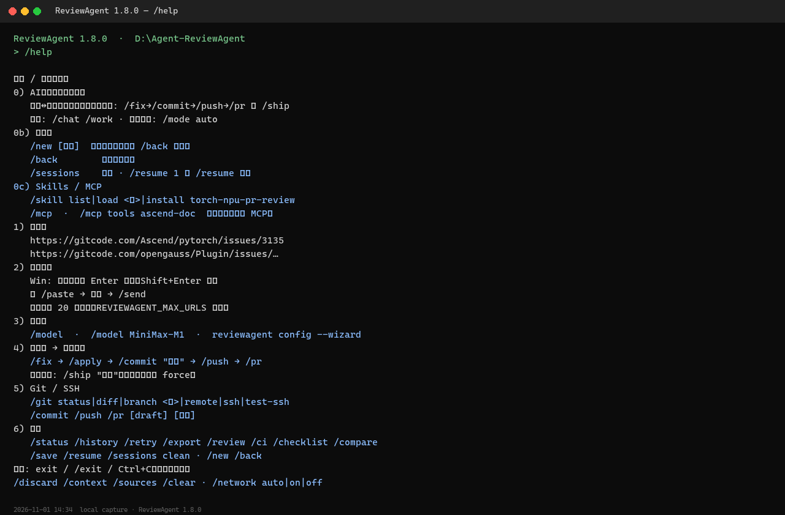
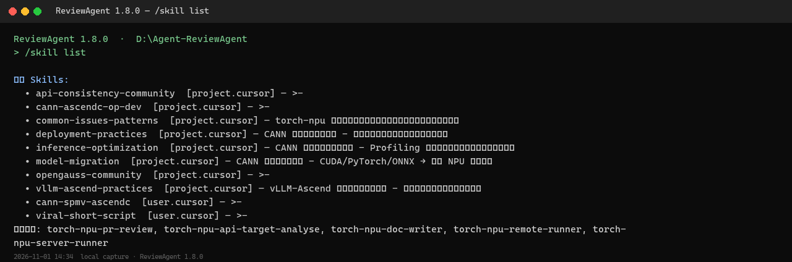
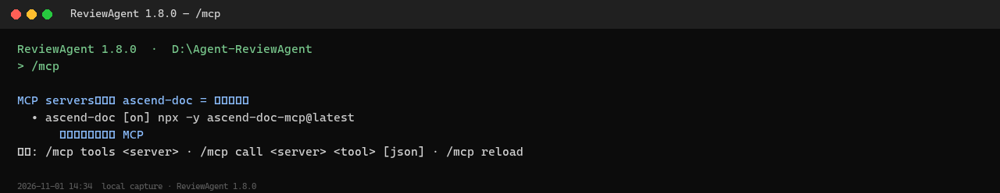
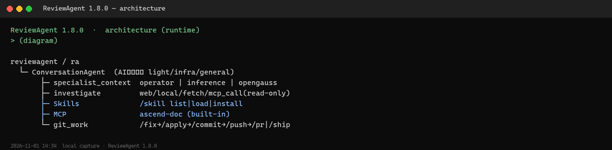

昇腾 AI Infra 审查与排障智能体 —— 把「能对话」升级为「能取证、能路由、能在确认后交付」的 Coding Agent。
GitHub / GitCode PR·Issue、CI、讨论一键拉取
算子 / 推理 / openGauss + Skills × 昇腾 MCP
/fix→/apply→/ship，禁止 force / amend
任务书、design 模板、精度口径、审核话术分散在多仓与群公告，贡献者难以一次对齐。
通用模型不懂 GitCode / CI / 社区验收；给建议却拿不到证据，更落不了 Git 工作流。
自动改代码、乱 force 推送不可接受。社区与企业需要「只读调查 + 显式确认」。
CodeVigil Agent 是 Hermes 风格终端智能体：默认 AI 自动调换；贴上 GitHub/GitCode 链接或昇腾关键词进入 Infra 车道；按算子 / 推理 / openGauss 加载专业 Skills；经昇腾文档 MCP 查证；输出可证实问题与建议；本地改动必须 /fix→预览→/apply，再 /commit·/push·/pr 或 /ship 逐步确认，禁止 force/amend。已开源 MIT，209 项回归守护边界。
主：Coding — 代码审查、CI 归因、补丁与 PR 生产力
兼：科研 — 社区 Issue/PR/师生审核对话采集与模式沉淀
粘贴 design PR → 算子路由 → cann-op-checker 红线报告
/ci 归类 + MCP 查文档 → /fix 预览 → /ship 开 PR
collect 拉取师生对话与 CI，按角色标注供 skill 引用
reviewagent / ra · AI自动调换 · /new /back · /skill · /mcp
operator · inference · opengauss
Agents + Skills（预算 16k 字符 / 32KiB）
web / local / fetch_pr_issue
mcp_call（仅 readOnlyHint=true）
内置 ascend-doc
npx -y ascend-doc-mcp@latest
/fix→/apply→/commit→/push→/pr
/ship 逐步确认 · 禁 force
证据层：GitHub / GitCode API · 本地案例库 · collect（CI / 师生审核对话）
入选后 DEMO：装 CLI → 贴 GitCode 链接 → 出报告 → 补丁预览（≤3 分钟视频）。 可选封装为 openJiuwen WorkSwarm 工具节点争取生态加分（当前未虚构已接入）。 依赖：自备模型 API · 可选 GITCODE_TOKEN · Node≥22。



